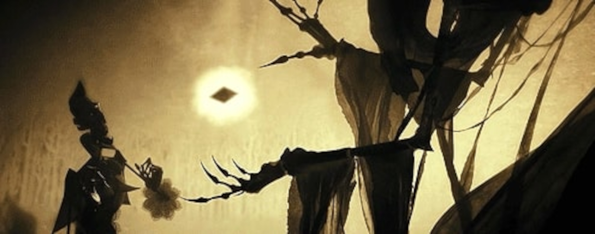
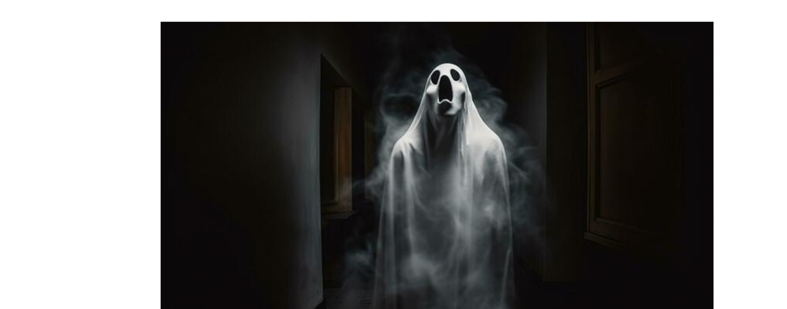

Los Tres Hermanos - Final 2
El segundo hermano viajó a su hogar, donde vivía solo. Allí, tomó la piedra y la giró tres veces en su mano. Para su asombro y alegría, la figura de la joven con la que había esperado casarse antes de su prematura muerte apareció ante él.
Sin embargo, pronto se dio cuenta de que ella estaba triste y fría, separada de él como por un velo. A pesar de que había regresado al mundo mortal, no pertenecía realmente a él y sufría.
Finalmente, el segundo hermano, loco de un desesperado anhelo, se quitó la vida para unirse verdaderamente a ella. Y así fue como la Muerte se llevó al segundo hermano.